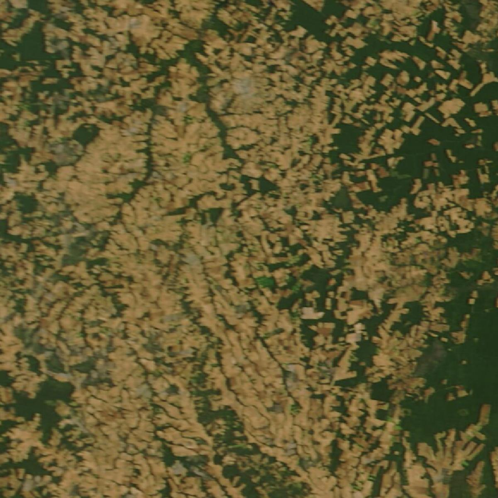

Your field
Tap the satellite map to place your field. Soil comes from global soil maps; you can correct it with your own soil test.

MODIS Terra true colour, 8 July 2023, via NASA GIBS. Area: 13.5–11.5° S, 56.5–54.5° W.
Field 1
What matters
NASA data
Every layer below is a real NASA image of the same area. Turn layers on and off to see what Sky2Root reads for your field.
Layers
Also used
- NEX-GDDP-CMIP6 · downscaled climate projections to 2100, 0.25°, for the 2050 stress test
- GRACE-FO · regional water-storage trend, to flag thirsty rotations
- NASADEM · 30 m elevation, for slope and erosion
- HLS · 30 m Landsat and Sentinel-2 imagery, for field-scale greenness
Simulate
One season, day by day. Sowing waits for the first good rain; then rain fills the soil, the crop drinks it down, and heat at flowering is counted.
Replay
The same simulation, run for every season since 1985. Click any season to watch it day by day.
All four rotations
Rank
Your priorities set the order. Every option shows how often it failed, its harvest, its water need and what it does to the soil.
What matters
Reliability against soil health
Monitor
After planting, satellites keep watching. This greenness curve is real MODIS data for one field near Sorriso, Brazil: soy, then maize, then a bare dry season every year.
Bare-soil days per year
What this tells the farmer
District
For extension agents and co-ops: every farm in a district, with its recommended rotation and what still needs a visit.